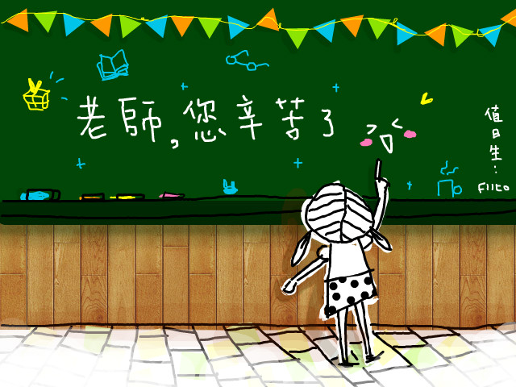

:感謝老師這學期的用心教導，讓我們學到好多關於電腦應用程式的技巧， 印象深刻的是學會修圖程式和製作網站，雖然過程都比較繁忙複雜，但學到的知識真的很多， 也感謝老師在課堂上都不厭其煩的走過來指導我們，希望下次的課堂還能遇到您，我們會開心的上課的~~~~~ 謝謝老師，新年快樂唷!
印象深刻的是學會修圖程式和製作網站，雖然過程都比較繁忙複雜，但學到的知識真的很多，
也感謝老師在課堂上都不厭其煩的走過來指導我們，希望下次的課堂還能遇到您，我們會開心的上課的~~~~~
謝謝老師，新年快樂唷!